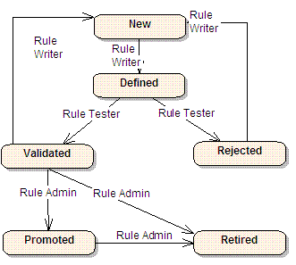

|
In the state diagram below the following
abbreviations are used:
· Rule
Writer or Rule Author is the end user of the BRMS application
· Rule
Admin is an administrator of the rule set.
· Rule
Tester can be an automatic process or a human.

Some complementary
guidelines:
· When a
rule is created its status is new
· A rule
once promoted could not be deleted.
· A rule
can be set active or inactive at any state, by using the inactive property
· From
this life cycle it is important to note that once a rule is promoted the user could not update it. He needs to create a
new rule by copy and paste and restart the life cycle up to Validated. Once the rule is ready for deployment a rule
administrator will retired the first rule and promote the new one. This is important to follow this process to maintain
the integrity of the rule set.
There is a common requirement that may need to
be supported to enhance the rule life cycle: "During its life cycle a rule can be deployed only to a specific Test
Decision Service, before going to production".
|